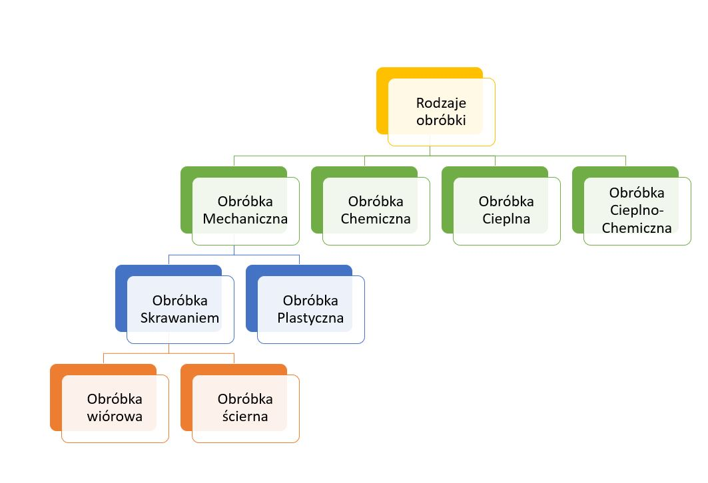

>Jest to najprościej mówiąc nadanie nowych cech przedmiotowi, które są zgodne z założeniami technicznymi,
czyli na przykład: wymiarów, gładkości czy też twardości. Obróbki dokonuje się przy użyciu narzędzi lub maszyn

Obróbka mechaniczna
jest obróbką, przy której zmienia się wymiary zewnętrzne obrabianego elementu.
Podczas materiał może być oddzielany fragmentami lub poprzez wywieranie nacisku. Dzieli się na obróbkę skrawaniem oraz obróbkę plastyczną.
Obróbka plastyczna
Obróbka, która umożliwia kształtowanie metali, zmianę ich właściwości.
Obróbka chemiczna
Polega na oddziaływaniu na powierzchnię metalowych elementów w sposób chemiczny lub fizykochemiczny. Na wskutek takiego działa na obrabianym przedmiocie powstaje specjalna powłoka ochronna,
która do tego, że zabezpiecza przed korozją, to jeszcze zwiększa wytrzymałość na uszkodzenia mechaniczne.
Obróbka cieplna
Obróbka podczas której wykorzystuje się wysoką temperaturę, od której zalezą właściwości plastyczne metali. Polega na nagrzaniu obrabianego przedmiotu, ukształtowaniu go,
a na koniec na schłodzeniu tego przedmiotu po to, aby zachował swoje nowo nadane parametry.
Obróbka cieplno-chemiczna
polega na oddziaływaniu cieplnym jak i również chemicznym na dany element, pod wpływem wystarczająco wysokiej temperatury oraz odpowiednio
dobranych czynników chemicznych można zmodyfikować właściwości za równo fizyczne, jak i chemiczne obrabianych przedmiotów